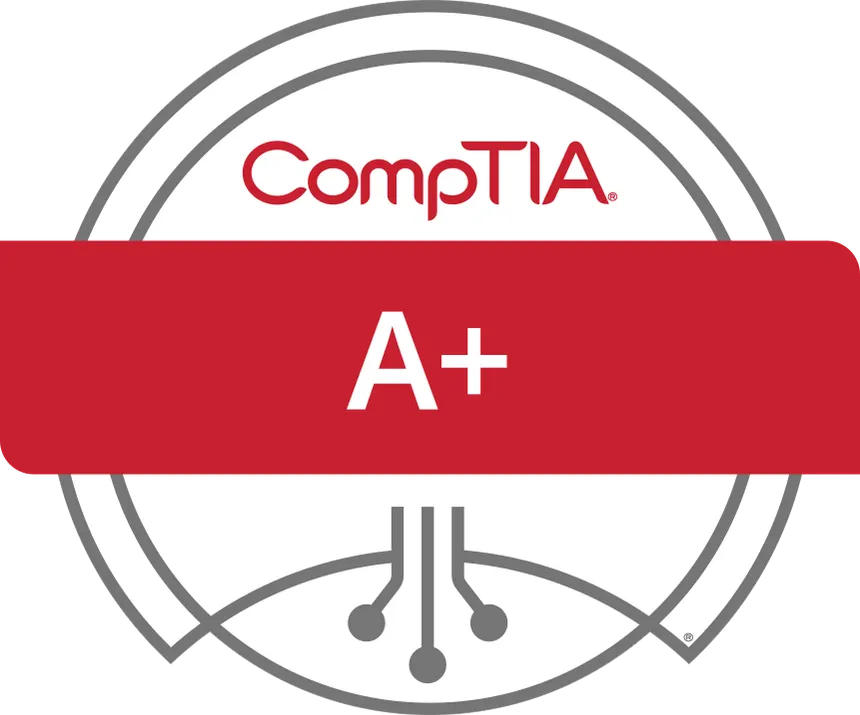

Certifications en cours d'obtention
Cisco – Introduction to Networks
Initiation aux réseaux, adressage IP, modèle OSI, routage et commutation.
ANSSI – Sensibilisation à la cybersécurité
Bonnes pratiques, sécurité des mots de passe, risques numériques, RGPD.

CompTIA+ – IT Fundamentals
Connaissances essentielles en informatique : hardware, réseau, sécurité, dépannage.